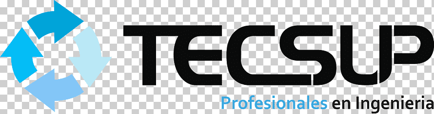

Angular · Aprendizaje real
Copiar código no es aprender: mi lección con Angular
Reflexión sobre el uso excesivo de IA y autocompletado, y cómo volver a aprender escribiendo código con las manos.
Leer artículo →Soy egresado de Ingeniería de Sistemas por la Universidad Nacional de San Agustín (UNSA)

y cuento con formación en TECSUP, institución prestigiosa de Arequipa.
Mi camino comenzó enseñando matemáticas y programación, lo que fortaleció mi capacidad para explicar, diseñar y estructurar sistemas claros. Hoy me enfoco en backend y cloud computing, construyendo aplicaciones escalables, mantenibles y pensadas para crecer sin romperse.
MCA Constructores
Lideré un equipo para desarrollar un sistema de detección de robo de combustible usando Angular y .NET. Diseñé flujos y mockups del sistema, asegurando la funcionalidad y la experiencia de usuario.
UPGRADE
Participé en el desarrollo de un sistema CRM empresarial para la gestión de clientes y ventas. Implementé interfaces, módulos administrativos y dashboards usando Angular y TypeScript, integrando funcionalidades orientadas a procesos ERP.
UPGRADE
Diseñé flujos y mockups funcionales para un e-commerce, implementé formularios con validaciones en Angular y colaboré en tareas backend con .NET. Documenté requerimientos y trabajé bajo metodología ágil.
Proyectos Freelance
Diseñé y publiqué sitios web para empresas del sector eléctrico
usando WordPress: configuración de dominios, diseño visual,
estructura de contenido y plugins.
Sitios web:
inserservicioselectricos.com
|
joncarelectric.store
Diseño UX/UI para portal inmobiliario académico usando Balsamiq,
con filtros inteligentes, login con redes sociales y vista
multimedia de propiedades.
Universidad Nacional de San Agustín
Desarrollo backend con NestJS y PostgreSQL. Implementación de APIs RESTful y gestión de base de datos para más de 20 usuarios.
GRUPO BRYCE – Colegio Bryce
Enseñé matemáticas y física a estudiantes de secundaria por 5
años, incluyendo clases virtuales durante la pandemia.
Implementé herramientas tecnológicas como Zoom, Google Classroom
y Quizizz, elevando la participación y aprendizaje.
Desarrollé materiales interactivos y técnicas adaptadas a
diferentes estilos de aprendizaje, fortaleciendo comunicación,
liderazgo y estructuración lógica de contenidos.
Git / GitHub / GitLab
Docker
Postman / Swagger
SCRUM
Jira
Trello
MS Project
Diagrama de Gantt
Desarrollo de APIs, lógica de negocio y sistemas empresariales con enfoque en mantenibilidad.
Interfaces web con Angular, componentes reutilizables y consumo de APIs REST.
Integración entre sistemas, APIs externas y servicios existentes.
Despliegue de aplicaciones y entornos básicos en la nube.
Corrección de bugs, mejoras y soporte sobre sistemas existentes.
Creación, personalización y mantenimiento de sitios web en WordPress.
Sistema CRM empresarial para gestión de clientes y ventas. Desarrollo de interfaces, módulos ERP y dashboards.
Sistema para detección y control de robo de combustible. Integración Angular + .NET y diseño de interfaces.
Plataforma de comercio electrónico con autenticación JWT, carrito de compras y panel administrativo.
Evidencia de capacidad analítica, arquitectura de software y rigor científico.
Revista Innovación y Software (2024)
Comparativa de modelos (Regresión vs. Árboles) en un dataset de 32,000 registros. Se demostró la superioridad del Árbol de Decisión con una precisión del 87.9%.
Revisión Sistemática
Análisis de factores de éxito y métricas críticas (escalabilidad, resiliencia) para la migración bancaria. Se define un marco integral sobre automatización, desacoplamiento y orquestación en entornos financieros.
Líder Técnico · Upgrade Sistemas
+51 997560905
"Crhistian demuestra compromiso y capacidad para adaptarse rápidamente. Su experiencia en Angular, documentación clara y comunicación efectiva aportan valor real al equipo de desarrollo."
Proyecto CRM Empresarial
"Trabajar con Crhistian es sencillo: comunica bien, pregunta cuando no entiende y se enfoca en resolver problemas reales. Su background en docencia se nota en la forma clara de explicar."
Institución Educativa
"Durante más de 5 años, Crhistian destacó como docente por su responsabilidad, liderazgo y capacidad para explicar conceptos complejos de forma sencilla. Hoy esas habilidades se reflejan en su trabajo como desarrollador backend."
Reflexión sobre el uso excesivo de IA y autocompletado, y cómo volver a aprender escribiendo código con las manos.
Leer artículo →Explicación sencilla del flujo de datos en Angular usando una mini tienda como ejemplo práctico.
Leer artículo →Cómo aplicar el hábito de la proactividad cuando fallas en un examen técnico o enfrentas presión laboral.
Leer artículo →¿Tienes una oportunidad, proyecto o idea técnica? Estoy abierto a conversar sobre desarrollo backend, cloud y aprendizaje continuo.
cpacori@unsa.edu.pe
Prefiero el contacto directo y claro.
Escríbeme un correo